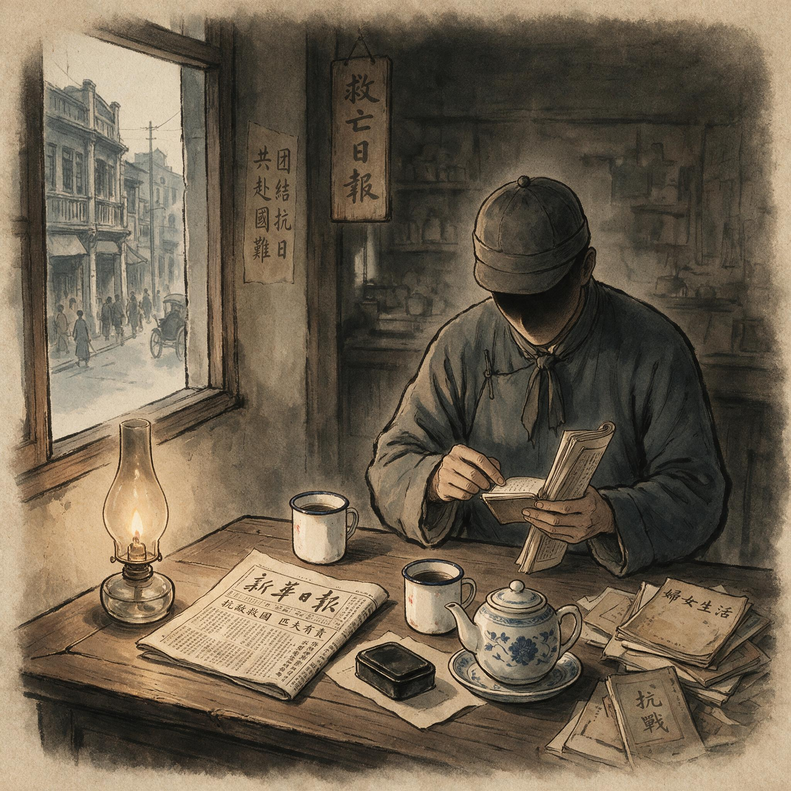

第 6 章
抗日统一战线中的双重身份
1938年3月，一份用薄纸印制的《行营所属机关人员调查表》出现在八路军驻西安办事处的档案中。表格十二栏——姓名、化名、籍贯、年龄、现职、到职日期、每日办公时间、住址、是否住机关宿舍

抗日统一战线中的双重身份：历史出版插图
AI 生成插图，非史实影像。
、来往最密者三人、曾否加入其他团体、备考——逐一填写完毕，唯备考栏空置。表格底部，调查单位以钢笔加注一行：“该员每日午饭后必出机关，约一时半归，所往何处待查。”
这份表格之所以保留下来，不是因为填表人后来成了大人物——事实上他在1939年的空袭中遇难，组织档案里只留下一个化名。表格的幸存纯属偶然：它被混在一批缴获的国民党军政机关废弃卷宗中，战后移交档案馆时无人留意。但表格本身的结构，精确地记录了一个历史节点上国民党特务系统对中共公开人员的监控方式。调查单位要的不是罪证，而是生活规律；不是现行犯的逮捕依据，而是每一个被登记者的“可追溯性”。表格设计的逻辑很清楚：公开合作之后，中共人员在国统区不再以“匪”的身份存在，但他们作为“异己”的一切行为细节，都应当进入一个可以随时翻检、比对、串联的档案系统。
这就是1937年之后中共地下工作面临的全新环境。此前一个阶段的本地化改造，已经在上海等城市确立了精干埋伏的基本原则：以合法职业和本地关系为生存基础，以单线联系为安全边界，以长期停留替代频繁行动。这些原则是在完全非法的条件下形成的，目标只有一个——保住组织不散。
抗战爆发后，国共合作使中共在国统区获得了公开活动的合法空间，八路军办事处、新华日报各地分馆、救亡团体和文化机构中的中共人员可以公开露面，可以用真实职务与国民党打交道。但这套合法身份同时被纳入敌方的档案管理体系，每一个公开人员的一举一动，都可能在某个调查表的栏目中留下痕迹。本地化改造所强调的“停留”，原本是为了减少暴露面；但在公开合作条件下，停留越久，被记录的社会关系就越多，档案厚度就越大。
战争一爆发，这个问题就摆在眼前。1937年8月，李克农奉命组建八路军驻沪办事处，随后转任驻京办事处处长。这些公开机构的设立速度极快，几乎与战局同步推进。上海办事处设在法租界福煦路，对外称“八路军驻沪办事处”，实际上承担的任务远远超出军事联络：接洽各团体、收集日军动向、安置撤退人员、维护秘密交通线，每一项都需要与不同社会层面发生接触。在南京，办事处设在傅厚岗，与国民政府军政部、外交部、卫戍司令部都有公事往来。
李克农本人在此期间以公开身份多次出入军政机关，签署公文、办理交涉、参加通报会。每一次出现都被记录在案。国民党方面的档案中有他此时的多份登记表，其中一份注明“该员口音皖中，似曾在沪活动”，另一份在“交往人员”栏下填了四个名字，其中两名是已知的中共党员，另外两名则被标注“身份待查”。这些登记表的存在，不意味着国民党可以在当时就破获中共秘密组织。恰恰相反，它暴露的正是监控的极限：可以记录，却难以穿透。公开身份像一道墙，墙外的人可以拍下墙的每一面外观，但只要墙内的人不主动跨出公开职务的范围，调查者就无法从法律上进入墙内。
李克农在南京期间严格维持了一种表面生活：从办事处到军政部，从军政部回办事处，偶尔去红万字会参与救济事务，晚上不出门。他的公开活动如此单调，以至于中统南京实验区的监视日志中出现了“该员生活极有规律，似无可疑”的评语。监视者自己都开始怀疑监视的意义。但问题不在这里。问题在于，李克农是少数。
他不是普通的办事处人员，而是1929年就进入国民党无线电系统、经历过顾顺章叛变、亲手传递过钱壮飞截获电报的情报老手。他对安全界线有近乎本能的判断力，知道什么时候可以多走一步，什么时候必须退回最小接触圈。而抗战初期大量涌入公开机构的中共人员，并不具备这种经验。
1937年下半年到1938年间，八路军各办事处和新华日报各分馆的编制迅速扩大，许多在1935年大破坏后失去组织关系的党员重新出来工作，大批从平津、上海南下的进步青年被吸收入党和半公开岗位。这些人对保密纪律的理解程度参差不齐，对“合法掩护”的理解常常偏于乐观，以为合作就是可以打开窗户说话。广州发生过一个事件，明这种乐观到了什么程度。1938年春，八路军驻广州办事处成立不久，一位刚到任的青年干部在珠江边的茶楼与友人聚会，席间谈及办事处工作内容，音量没有控制到邻座无法听清。邻座恰好是广州警察局侦缉队的外围人员，当天就把谈话内容写进报告。
这份报告经市警察局转到省政府，再转到省党部调查室，最终形成一份四页纸的调查报告，夹入该办事处的人员档案。好在那位干部谈到的内容仅限于一般性的战况分析和后方动员，没有触及秘密组织的任何线索。但报告上的批注仍值得注意——省党部调查室主任在页边写道：“共方人员以公开职业为掩护，其私下言论足资推知其组织范围，须长期积累。”
“长期积累”四个字，概括了抗战初期国民党反共监控的基本哲学。他们不再急于破获和逮捕，而是把每一个公开暴露的中共人员当作一个信息节点，试图通过不断累积社会关系、行踪规律和交往圈子，拼出隐蔽在公开机构背后的秘密网络。中统在1938年下发的《异党活动调查须知》中明确规定，对已知身份的公开人员，“应特别注意其交友情况、通信往来、经济收支及业余行踪，逐月汇总，勿使间断”。
军统则建立了更细致的跟踪记录格式，包括“外出时间”“会面对象”“谈话地点”“所携物品”“乘坐交通工具”等栏。这些格式本身没有杀伤力，但它们构成了一种持续的压力：公开人员不知道自己哪一次外出、哪一次谈话、哪一次社交活动会被纳入档案，也不知道这些档案何时会被用作证据。中共对此的回应，是在公开工作与秘密组织之间建立严格的隔离制度。
1937年12月政治局会议后，中央对国统区工作下达了数条指示，其中最核心的一条是：各公开机构的党员，除该机构内部事务外，不得与地方秘密组织发生横向关系；公开机构内部不得讨论秘密工作；秘密组织的成员不得进入公开机构，除非持有特别许可并仅限于必要的接头。
这个制度在1938年六届六中全会后进一步强化，长江局被撤销，南方局成立，周恩来亲自掌舵国统区工作，对公开机构的管理趋严。重庆时期的红岩村，对外是八路军办事处，对内则是一套严格分工的封闭系统：有公开接待来访者的会客室，有只供秘密交通使用的后门通道，有专门处理情报的房间，有存放密码和发报设备的密室。不同区域之间的人员不互相走动，不同业务之间的信息不横向流通。
这种隔离机制的建立，不是对本地化改造原则的放弃，而是对其在合法条件下的重新表述。本地化要求党员在社会中长期停留，以正常的职业和家庭关系为掩护；隔离机制则要求这种停留必须发生在可控的公开身份之内，不得逾越公开职务所必须的社会接触范围。
一个在办事处担任文书工作的党员，他的社会关系应当仅限于与文书业务有关的机关人员、少数本地商贩和住所邻居；如果他突然结交了一名银行职员或一名报馆编辑，就必须向上级说明原因，并且通常在未经批准前不得继续发展这种关系。这种限制使公开干部在社交上趋向保守，但也使他们在敌方档案中留下的社会关系保持在一个相对干净、不易被扩线追踪的水平。
然而，组织效能不是靠保持干净就能实现的。一个完全干净、没有多余社会关系的党员，也同样无法获取有价值的信息。抗战时期，中共在国统区的情报工作之所以能够有所作为，恰恰是因为有一部分党员主动进入了“不够干净”的岗位——进入国民党的军政、文化、经济机构，以职务为掩护，经营社会关系，接近信息源。这些人的存在及其作用，就是本章必须正面展开的内容。
他们的工作方式，与1937年以前以保存组织为第一优先的精干埋伏已经有了质的不同：不是少动、多藏、等待时机，而是在规定的方向上有控制地“动”，在限定程度内把社会关系当作工具，把职务转化为信息通道。
1938年冬，桂林成为这类行动的一个重要试验场。八路军驻桂林办事处此时刚刚建立，李克农以公开身份与广西地方实力派保持联络。一批党员以文教、民政、财政领域的职务为掩护，嵌入桂系地方政权的中下层机构。广西地方实力派在当时的历史条件下，对公开的进步文化活动采取相对宽容政策，部分党员能够在省政府教育厅、县一级教育科、报社和出版社获得职位。其中，进入教育厅任职的一位党员，利用收发文件的职务便利，能够看到广西地方财政收支的内部报告、各县教育经费的分配数字，以及与中央财政部的往来公文。
这些材料单独看都不算核心机密，但它们反映出广西地方政权在抗战中与重庆中央政府之间的一种微妙紧张：财务不统一、人事有矛盾、军事调动需要反复协商。
这位党员把文件中反映广西地方与重庆关系的部分摘抄下来，编成情报摘要，通过指定交通员定期送达南方局。情报摘要本身没有直接制造任何政治军事后果，但它进入南方局的研判系统后，与其他来自不同岗位的信息拼合，开始产生判断价值。例如，同一时期另一条线上的嵌入者从军令部系统获得了重庆方面对各战区经费拨付的排列表，发现桂系军队的拨款优先级明显低于中央嫡系部队；
来自银行系统的嵌入者则报告，广西地方银行在1939年两次拒绝中央银行的资金归集要求。三份来源互不隶属的情报拼在一起，基本可以判断：广西地方实力派在抗战中保有相当的自主性，短期内不会完全倒向重庆的反共路线。这个判断对南方局制定在桂活动策略和安排人员进退，显然是有用的。
这里必须澄清一个容易被神化的问题。嵌入不等于“打入核心”，也不等于“潜伏在敌人心脏”。上述情报来源的真实情形是：嵌入者的职务都很低，教育厅那位是科员，军令部那条线是档案股雇员，银行那条线是信贷调查员。
他们没有一个人坐在机密会议旁边，也没有人经手决定性的文件。他们接触到的都是业务层面的、公务流转中的、看起来平平无奇的材料。真正让他们发挥作用的，不是职级，而是制度——是他们背后那一套分工明确的信息处理系统。
这套系统的运转逻辑，与战前白区工作中“一个强人能者多劳”的模式截然不同。抗战开始后，从武汉时期到重庆时期，国统区秘密情报工作逐渐形成了一套岗位分工：最前端的“收集岗”只负责从公开机构日常办公中提取可能有价值的信息，将这些信息写成简明摘要，不需要做分析判断；中间的“交通岗”只负责传递，不拆阅、不询问，不知道收集岗的来历，也不知道上级会如何使用；
末端的“研判岗”在办事处或南方局的密室中，把来自不同渠道的碎片综合起来，结合公开报刊、内部通报和中央指示加以比对。这一链条中每个人的知识都被刻意限制在完成自身任务的必要范围内。这样，即便收集岗被跟踪或被捕，他也只能说出自己交给过谁什么东西，却说不出这条信息最终送到了哪里、派了什么用场；
即便交通岗暴露，也只能说出交接时间和地点，提供不了对方的真实身份。这种知识不对等的组织安排，把单一节点的脆弱性锁在了有限信息之内。国民党特务机关察觉到了这个变化。中统一份1939年前后的内部评估意见这样写道：共党自抗战以来，其秘密工作“转趋技术化，不似早年之一哄而起，一捕即散”；“其联络方法甚为简捷，往往一人只知一事，一事只经一二人手，纵使破获，亦难查明全貌”。军统方面在重庆地区对中共办事处的监控记录中也出现了类似的判断，称其人员“各司专职，不互相过问，似有严密分工”。
这段话不能只看字面。中统和军统在同一时期对自己编制扩张、档案积累和技术手段更新同样津津乐道，这里引述他们的判断，并不是要证明中共地下工作有多么“高明”，而是要指出一个制度性事实：在1937年以后，双方在双重身份的地带形成了结构性的隐蔽竞争，一方的监控趋于档案化和系统化，另一方的自我保护趋于专业化和分工化。竞争的胜负不在某一个案，而在谁能更稳定地维持自己的系统运转。
国民党方面的监控系统有其不可忽视的优势。中统和军统在抗战中的编制扩张，使他们在大多数国统区城市都有专门的对共调查单位；他们的档案工作前所未有地精细化，人员登记、社会关系记录、行踪跟踪、邮电检查、外围线民渗透，构成一套连贯的信息收集程序。这些档案积累到一定数量后，本身就成为一种威慑资源：任何一个被登记在册的人员，都随时可能成为逮捕行动的候选人；
什么时候行动，取决于政治气候，不取决于证据是否新增。1941年皖南事变前后的鲜明对比就是例证：事变前，重庆、上饶、兰州等地的特务机关对当地中共公开人员并未增加新的监控力度；事变一发生，同批档案立即转化为逮捕或驱逐的依据，证明档案的价值不在实时追踪，而在长期待用。
但国民党系统在竞争中也承受着结构性损耗。最突出的一点是中统与军统之间的相互防范严重影响了情报共享。
在成都，中统掌握了一批中共四川地下组织的嫌疑名单，军统同时也通过邮电检查获得了另一批线索，但两家互不通报，甚至互相怀疑对方的人员已被中共渗透。在西安，军统对八路军办事处的监控档案中有一批与中统重复的记录，整理起来浪费了大量人力却始终没有做过系统比对。
这些问题并非具体人事纠葛所致，而是整个国民党特务体系的制度特征：戴笠与徐恩曾各有权力来源和汇报对象，无法通过统一机构实现对共监控的集约化，最终呈现的是两条各自为政的情报流。
中共方面的损耗则来自完全不同的方向。引入隔离机制和岗位分工，确实提升了情报系统的安全度和信息处理效率，但也制造了组织内部的信任难题。公开干部在社会活动中积累的关系，因为隔离制度，不能与秘密系统直接共享，导致一些明明摆在眼前的社会资源无法被充分利用。更深刻的问题是：那些嵌入国民党机构的党员，为了维持职务身份，必须建立“正常社会关系”，参加饭局、加入同业公会、在公开场合附和某些政治表态。
这些行为在当时的纪律框架内是允许的，甚至是被鼓励的——没有这些行为，职务就保不住。但组织将来如何区分哪些是“必要的掩护行为”，哪些是“意志不坚的迎合”？
1938年四川地下组织内部的一次讨论留下了文字记录：一位书店经营者出身的中层干部，在恢复组织关系时被审查员问及“为何与中统人员有来往”。他回答：“书店来客，我不能择人。”审查员在记录旁批了四个字：“此点存疑。”这位干部的组织关系最终得以恢复，但“存疑”二字始终没有从档案中去掉。
类似的模糊地带在抗战期间大量积累。国统区每一个参与双重身份工作的党员，几乎都面临同样的难题：敌人通过正常社会往来渗透监控，组织则要求社会往来保持干净；但在现实工作中，越是接近有用信息的岗位，就越需要与敌方人员维持某种程度的正常交往。隔离制度只解决了组织内部的信息安全问题，并不能回答：当组织回头审查这些社会关系是否“必要”时，用什么标准来划界线？
这种把职务转化为信息通道的能力，在1939年至1940年间逐渐系统化，但它的前提条件远比表面看起来苛刻。
一个嵌入国民党机构的党员，首先要解决的不是“怎么传”，而是“怎么看”——在日常公务中，哪些文件值得多看一眼，哪些谈话值得记下来，哪些数字在孤立状态下毫无意义但与其他信息拼合后可能产生价值。这需要一种不同于早期地下工作的训练。1937年以前的白区工作，绝大多数党员的任务是生存和联络，对信息的敏感度停留在“敌人是否注意到我们”这个层面。
而现在，嵌入者面对的是成堆的公文、报表、会议记录和人事通知，其中绝大部分与情报无关，真正有用的信息往往藏在不起眼的附件、抄送名单或经费明细里。没有经过专门训练的人，要么什么都看不出，要么什么都想抄，结果抄回来一堆废纸，既浪费交通资源，又增加暴露风险。
南方局在1939年下半年开始有意识地对嵌入岗位的党员进行信息识别训练。训练方式不是办班——那太危险——而是通过交通员传递书面指导。
一份保存下来的指导提纲列出了几类“应特别注意的材料”：涉及部队调动和驻防变更的公文；涉及经费拨付、物资调配和仓储变动的数字；涉及人事任免和机构调整的通知；涉及地方实力派与中央往来的函电。提纲特别注明：“不必抄录全文，只记关键数字、地名、人名和时间节点；如无法当场记录，则默记后立即离开办公场所再追记。”
这种训练的效果，在1940年的几个案例中得到了验证。一位嵌入四川省政府建设厅的党员，在经手一份关于川康公路改建工程的拨款文件时，注意到拨款数字与工程实际进度之间存在明显差额，差额部分在文件上被标注为“另项支出”，但没有说明具体用途。他没有抄录整份文件，只在摘要中记下拨款总额、工程预算、差额数字和“另项支出”四个字。
这份摘要送到南方局后，研判人员将其与另一条线上获得的川康地区驻军调动信息对照，发现“另项支出”的时间节点与驻军调动高度吻合，由此推断出国民党方面正在通过工程拨款渠道秘密增加川康地区的军事开支。这个推断后来被其他来源证实。
这个案例的价值不在情报本身——川康地区的军事部署变动在几个月后就已经公开——而在于它展示了信息转化能力的核心逻辑：嵌入者不需要看到机密文件，他只需要看到机密行动在行政流程中留下的痕迹。任何秘密行动，只要涉及经费、物资、人员和公文流转，就必然在行政系统中产生痕迹。这些痕迹单独看都是合法的行政记录，不具备保密等级，经手这些记录的也大多是中低级职员。但当这些痕迹被系统地收集、比对和拼合之后，它们可以反推出机密行动的大致轮廓。
国民党特务系统意识到了这个漏洞。1940年，军统在一份内部通报中要求各机关加强对中低级职员的管理，特别提到“应注意经办公文之低级雇员是否有抄录或默记行为”，并建议“重要公文之收发登记应尽量由可靠人员担任”。但这个建议在执行层面几乎无法落地——中低级职员人数太多，公文流转量太大，不可能全部由“可靠人员”经手。更何况，抗战时期国民党各机关普遍人手不足，大量公文积压，能够完成日常运转已属不易，根本没有余力对每一个经手公文的科员和雇员进行监控。这个制度性漏洞，在整个抗战期间都没有被有效堵上。
但嵌入者面临的威胁从来不只是来自制度漏洞的另一端。他们在国民党机构内部维持职务身份的过程中，必须不断做出一些在组织纪律框架内难以清晰界定边界的行为。
1940年，一位嵌入国民党中央通讯社的地方分社编辑，为了维持与分社社长的良好关系——这种关系是他能够继续接触通讯稿和内部通报的前提——在社长生日时随了份礼，并在寿宴上与在座的中统地方室人员寒暄交谈。他在事后向组织报告了这次社交活动，说明了自己与中统人员交谈的内容仅限于天气和战局，没有涉及任何工作信息。
组织在收到报告后没有追究，但也没有给出明确的“下不为例”或“可以继续”的结论。这份报告被归档，在“审查意见”栏里留下了空白。空白本身就是一种态度：组织此刻无法判断这种行为是否越界，因为判断标准尚未建立。隔离制度规定了公开干部不得与秘密组织发生横向关系，但没有规定公开干部在维持职务所必需的社交活动中，与敌方人员接触的边界在哪里。
这个空白在抗战期间被默许存在，因为前线需要情报，需要嵌入者保住岗位，需要他们在敌方机构内部建立信任。但空白不会永远空着。
这个问题的雏形，在1937年至1941年间已经清晰可见，只是被战争和合作的大环境暂时掩盖。1941年皖南事变的冲击，部分地暴露了这个问题的严重性。
事变后，南方局紧急部署一批公开干部撤退和隐蔽，但在撤退名单确认和路径安排过程中，组织突然发现：一部分需要紧急通知的干部，因为长期处于隔离状态，其隐蔽地址只有本人和直属交通员知道，而交通员已经在混乱中失联。另一些干部则因为社会关系过于复杂，无法判断哪些关系是工作必需、哪些是个人行为，导致撤退方案反复修改，时间被拖延。
这两类困难，表面看一个是“联系不上”，一个是“关系不清”，但根源指向同一个制度后果：在极端强调安全和隔离的组织体系中，个人行为的可追溯性和可解释性变得很弱，一旦面临快速决策，组织手中可用的判断依据其实非常有限。皖南事变最终没有导致国统区地下组织的整体崩溃，很大程度上是因为国际形势在1941年底发生了剧变，国共关系没有走到彻底破裂的那一步。但这并不意味着矛盾解决了。
1942年以后，随着延安整风运动全面展开，白区工作干部和长期在国统区活动的党员，开始被系统地纳入审查范围。审查的核心问题之一，就是他们在抗战期间与国民党方面的社会关系、公开言行以及嵌入过程中的种种“必要妥协”。当年那些为了获取情报而不得不建立的饭局关系、同业交往、政治表态，连同记录在册的“存疑”批注，都将成为审查者面前的一堆灰色材料。
此刻，1942年还未到来。在桂林，李克农去职后，八路军驻桂办事处于1941年1月被撤销，大部分人员转移回延安。
留下的嵌入者转入更深的蛰伏状态，减少接头频次，拉长情报传递周期，把“正常生活”的壳做得更厚。在重庆，南方局的红岩村里，公开工作与秘密工作仍然分两线运行。双重身份结构看似稳固，其实早已透支了组织对干部个人历史的理解能力。效能越高，证据越稀；依赖越深，猜忌越切。档案中那些问号和注脚，不会自行消失。它们被锁在铁皮柜里，等待另一种政治逻辑把它们翻检出来。